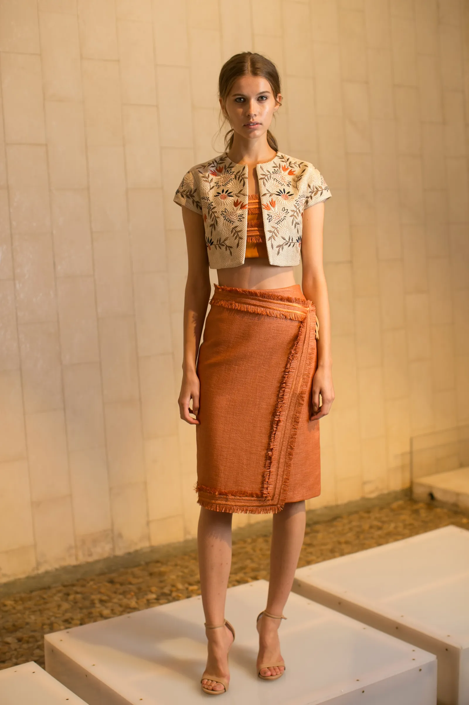
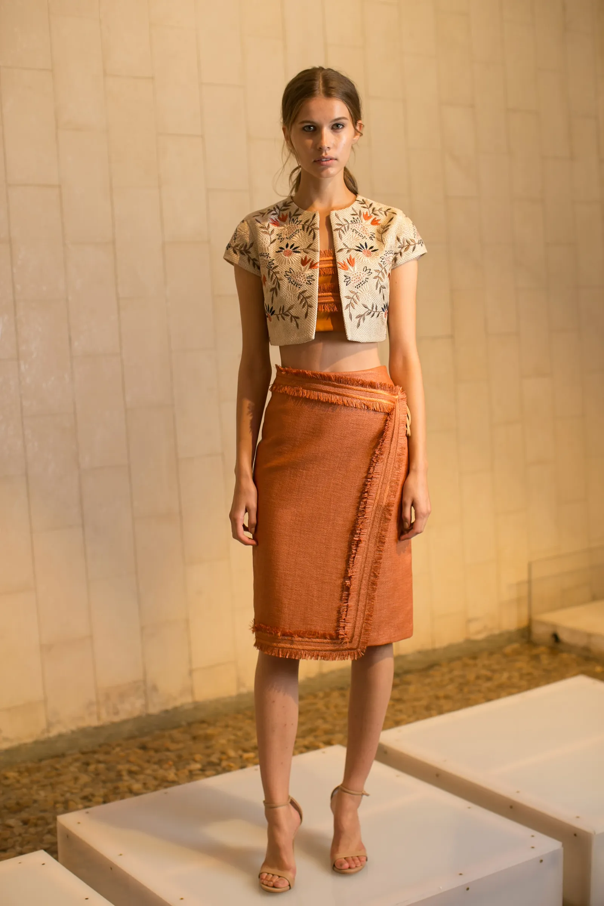

May 15, 1947
Josie Natori is born Josefina Almeda Cruz in Manila, Philippines.
Josie Natori is a Filipino-American fashion designer and the CEO and
founder of The Natori Company.

Josie Natori is born Josefina Almeda Cruz in Manila, Philippines.
Natori graduates from the Assumption Convent in Manila and moves to the United States to attend Manhattanville College in New York.
Natori graduates with a degree in Economics from Manhattanville College.
Natori works as an investment banker at Merrill Lynch, where she becomes the first female Vice President of the firm.
Natori starts her eponymous fashion brand, Natori Company, with a line of lingerie.
Natori expands her brand to include sleepwear and introduces her designs in Saks Fifth Avenue.
Natori debuts her ready-to-wear collection, which includes clothing and accessories.
Natori launches a home décor collection, featuring bedding, towels, and decorative accessories.
Natori introduces a fragrance line, with her first scent called Natori.
Natori is inducted into the Council of Fashion Designers of America (CFDA).
Natori celebrates the 35th anniversary of her brand and opens her first Natori-branded retail store in New York City.
Natori publishes her memoir, "The Art of Natori."
Natori collaborates with Pottery Barn on a home decor collection.
Natori Company is still in business and remains a prominent brand in the fashion industry.

Josie Natori is a Filipino-American fashion designer and the founder of the luxury fashion brand Natori Company. She is known for her elegant and sophisticated designs in lingerie, ready-to-wear clothing, accessories, fragrance, and home decor. With her unique blend of Eastern and Western influences, Natori has become an influential figure in the fashion industry and an inspiration to many aspiring designers.
A Woman of Fashion and Design
Josie Natori is a highly regarded fashion designer known for her sophisticated
and elegant designs that fuse Eastern and Western aesthetics.
She is also known for her luxury lingerie and loungewear brand, Natori.


Natori is a fashion and lifestyle brand founded in 1977 that offers a range of products, including lingerie, ready-to-wear clothing, fragrance, home decor, and accessories. The brand is known for its fusion of Eastern and Western design influences, use of luxurious fabrics and attention to detail.
The Natori clothing line offers a popular style for men known as the "Kabuki" pajama set. Made from soft cotton and featuring a traditional Japanese Kabuki print, the set includes a long-sleeved shirt and matching pants. This signature style is known for its comfortable fit and fashionable design, making it a favorite among many.
Josie Natori offers a variety of bridal clothing options, including the popular "Josie Natori Bridal" collection of luxurious lingerie and sleepwear designed specifically for brides. The collection features intricate details and high-quality materials such as lace and silk. In addition to the collection, there are other options for sleepwear and accessories in the Natori line that are comfortable and luxurious.
One of the most expensive and famous bedding collections from Natori is the "Dynasty" bedding collection. The Dynasty collection features luxurious bedding pieces made from high-quality materials and adorned with intricate embroidery and details. The collection includes comforters, duvet covers, shams, and decorative pillows, all designed to evoke a sense of luxury and sophistication. The Dynasty collection has been featured in numerous publications and is a favorite of many interior designers and home décor enthusiasts.
 


" I believe art is a gift to enrich one’s life, A luxury to experience and enjoy every day. At Natori, we bring art into everything we do. Each piece is designed and crafted To be a personal treasure – A modern harmony of East and West. A sensual palette of color and texture. A glamorous thread to weave into your life, Reflecting your inner world, Empowering your outer world. To me, indulgence is a necessity… As a woman, a traveler, a collector, I know the joy of exploring, the magic of expressing One’s every mood through objects of desire. As a classical pianist, I know one never plays the same note twice. There’s always an element of surprise and discovery, An evolving, unfolding adventure of what’s to come."
Josie Natori has built a strong and recognizable brand through her business acumen and marketing skills. Additionally, she is recognized for her philanthropic work and advocacy for the Asian American community. Her accomplishments in fashion, business, and philanthropy have earned her a place as one of the greatest women in fashion and business.
GROUP #15
✖
Jenelyn Pepito
Rovelyn Paradero
Catherine Vidas
Mariz Gutib
Reymond Calma